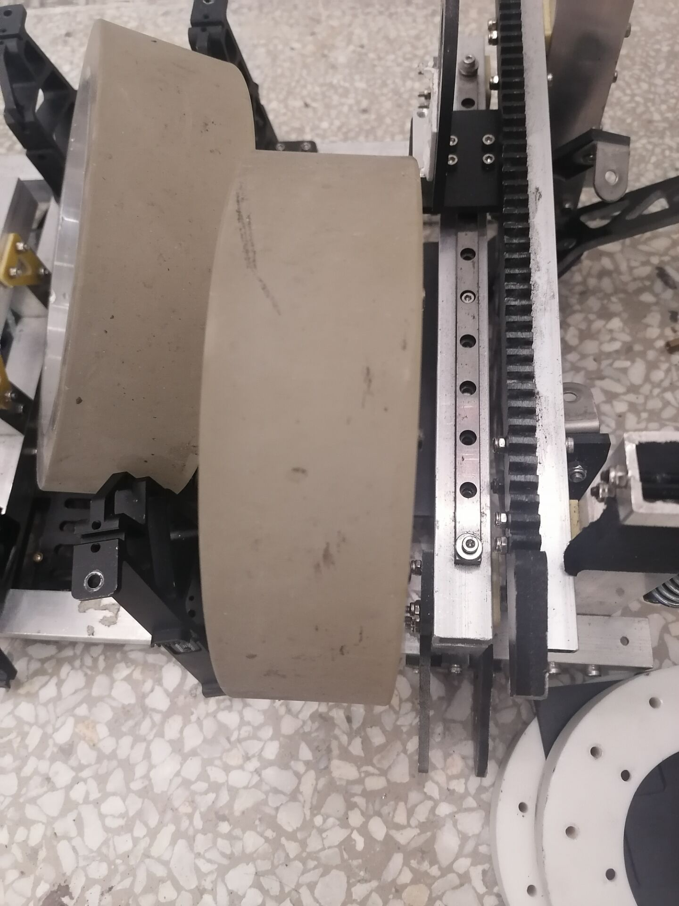
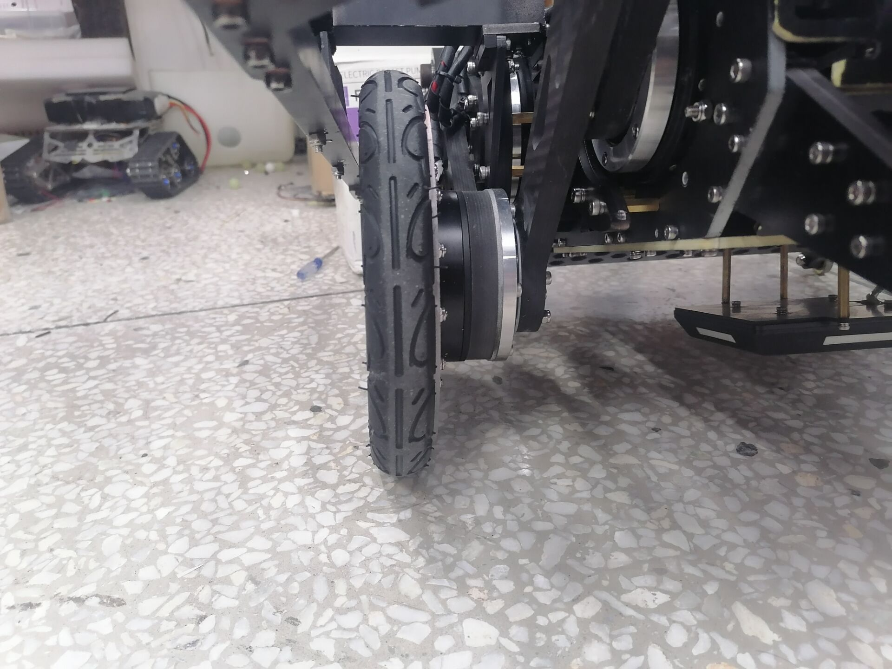

先看一下不能上场的轮子长什么样
再来看看能上场的轮子长什么样
两个图中可以很明显看出区别为能上场的轮子会比较薄，当其踩到大弹丸可以碾压过去，而较宽的轮子则无论如何也过不了大弹丸。
另一个关键特性是轮子的半径，轮子半径越大，其越野性能越好，但RM赛场上需要的越野性能不需要特别高(只需要能踩过大弹丸就行)，故轮子半径可以不需要11cm那么大(11cm是2023赛季的数据)，可以不用为了设计大轮子而导致云台设计出现很大的问题。
外层铝框并不是必要的，但它可以有效防止腿被卡住或者对腿造成很大损伤，故最好加上。其刚度是最为重要的特性，因为需要经常经历碰撞，设计时需要特别注意。
目前算法对腿的长度以及各腿比例要求并不高，但是2023赛季有一个问题，就是装上铝框之后，右侧关节与左侧关节连接处安装方式不同导致摩擦力大小不一样，这将会导致起跳时往一边倾斜。
电机包装得太过严密，导致电机散热很成问题，这将使电机很容易进入过热保护状态。
由于在进行运动学解算时，不只有一个解，为将腿保持在一定范围内，需要限制两侧小腿的角度，防止出现异形腿的情况无法恢复。上下限位共同决定了关节的运动范围，同时上限位作为关节电机初始化的位置，必须保证左右两个小腿在机器人倒下时能够自然收到两个限位处。下限位则决定了起跳或者站立的最大高度。
倾倒角度指的是机器人不受力时自然倾倒时，车身与水平的夹角(如图)，倾角较小时起身功率将会降低很多，但可能会导致上坡时导轮磕到坡，故需要设计到一个合适的角度(2023赛季为18度)。上交通过减小倾角，同时在上坡时让机器人抬腿抬高，这是一个不错的优化思路，可以参考一下。
该导轮设计时最好不要在装甲板外面，因为如果露出在装甲板外面，将会导致机器人变长，这样下落凤坡时若速度不够，则很容易磕到导轮翻车。(这一点同时也要求车尽量做短一些)。
该导轮位置也是磕碰重灾区，需要保证刚度。
目前NUC设计在云台与底盘连接处，这会导致NUC散热困难，散出的热量会加剧关节电机的发热。
当前(2023赛季)固定方式十分冗余，使机器人增重明显。
IMU需要放置在如图的位置，但图中由于设计问题，若需要更换IMU则需要将底下的整块板子拆掉，十分麻烦，故下一版车需要特别考虑这个问题。
在电路完整布完线之后，需要检查一下重心位置，尽量把两边调整到对称位置。
减一下重(23赛季23kg左右)，否则起身功率很高以及起跳困难。
设计完成之后记得和电路讨论一下布线，尽量让布线阳间一点。
2023.8.19 首次记录
2023.8.20 增加Yaw轴固定设计以及IMU位置设计描述